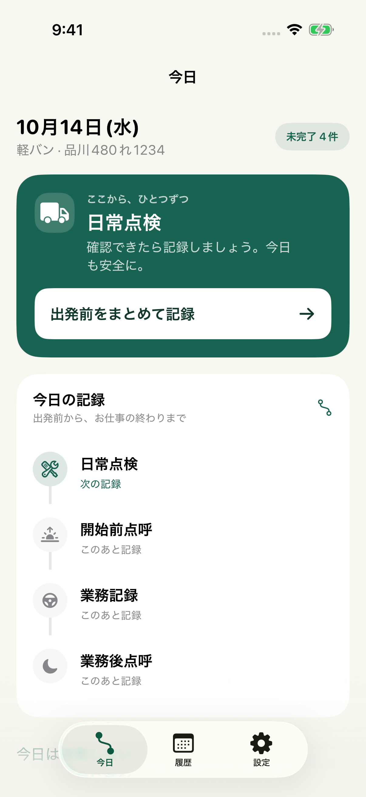

軽貨物ドライバーのための
記録補助アプリ
黒ナンバー記録簿
点検も、点呼も。
その日の記録を、ひとつに。
出発前から帰着後まで、画面の案内に沿って記録。黒ナンバー1台・運転者1人で仕事をする方に。
- 毎日の記録日常点検・点呼・業務・事故
- あとで確認履歴の閲覧・月次の不足確認
- 必要な控えPDF・CSV出力とバックアップ
基本機能は無料 ／ アプリ内購入あり
黒ナンバー記録簿TODAY

iPhoneアプリの開発とサポート
軽貨物ドライバーのための
記録補助アプリ
点検も、点呼も。
その日の記録を、ひとつに。
出発前から帰着後まで、画面の案内に沿って記録。黒ナンバー1台・運転者1人で仕事をする方に。
基本機能は無料 ／ アプリ内購入あり

毎日の入力から、月末の確認まで。
画面の記録・日付・車両番号はサンプルです。
無料とPro
記録の保存先は、基本的にお使いのiPhoneです。
バックアップはご自身で保存できます。
無料
日常点検・点呼・業務・事故の記録、履歴の閲覧、点検写真、定時リマインダー、手動バックアップ。
Pro / アプリ内購入
未記録がある場合だけの通知と、月次PDF・CSVの一括出力を追加します。月額・年額の自動更新プランです。
料金・期間・更新条件はアプリの購入画面でご確認ください。
Proと購入・復元のFAQ黒ナンバー記録簿について知りたいこと。